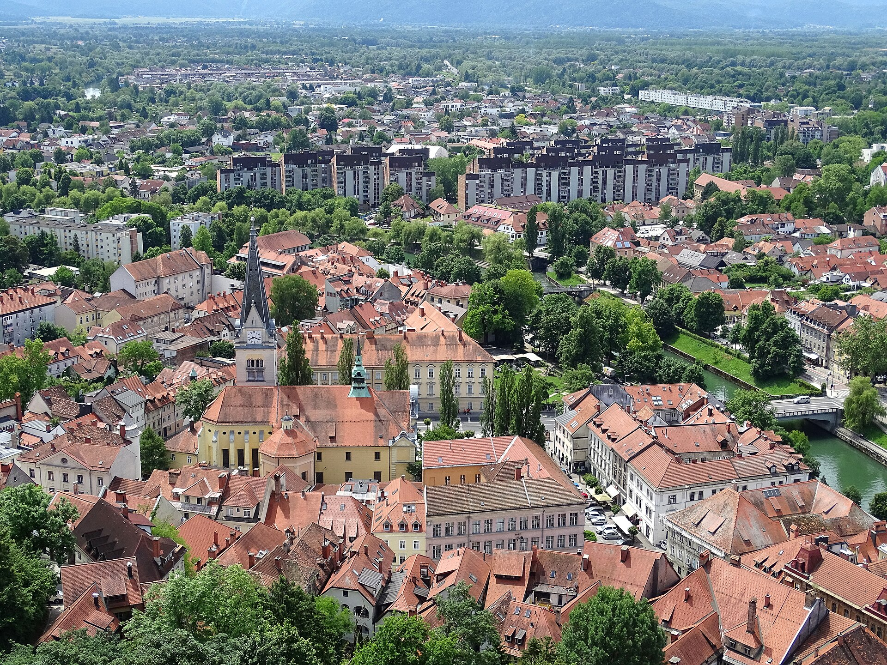
Thursday: Fly SAN → Ljubljana (~14h)
- United/Lufthansa
- Land Friday morning
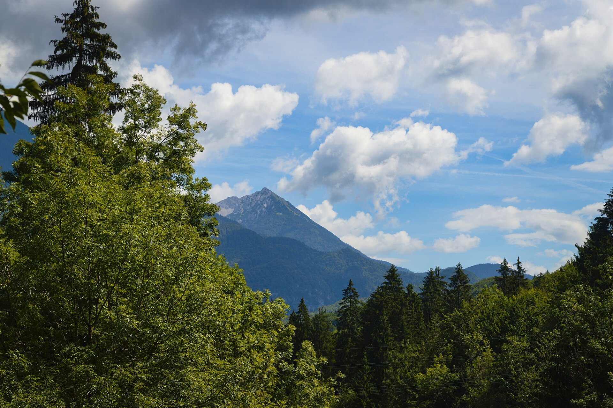
Alpine lakes, turquoise rivers, and an island finish on Hvar.
Stops: Ljubljana · Lake Bled · Soča Valley · Piran · Hvar Temp: 75–80°F
Off-radar Alpine charm. Lake Bled island, Ljubljana old town, Postojna caves, Soča River valley — pairs easily with a Croatian island. ~75–80°F.

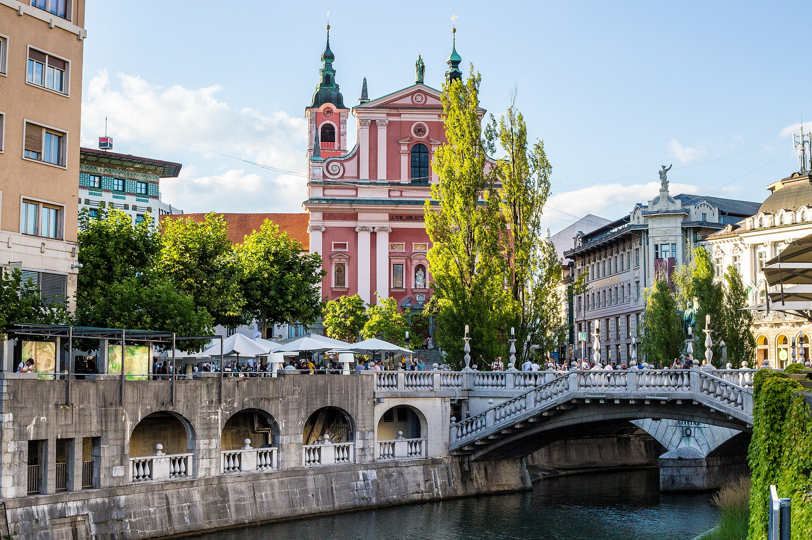
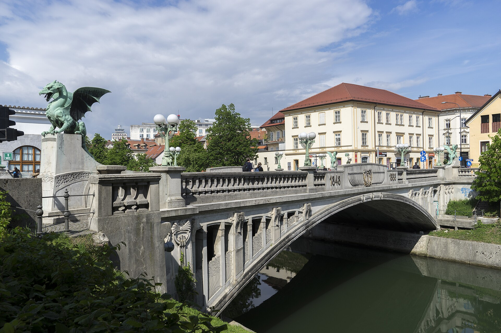
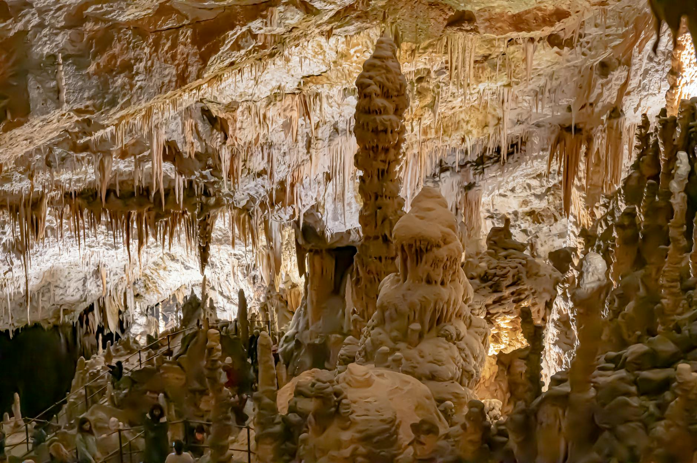
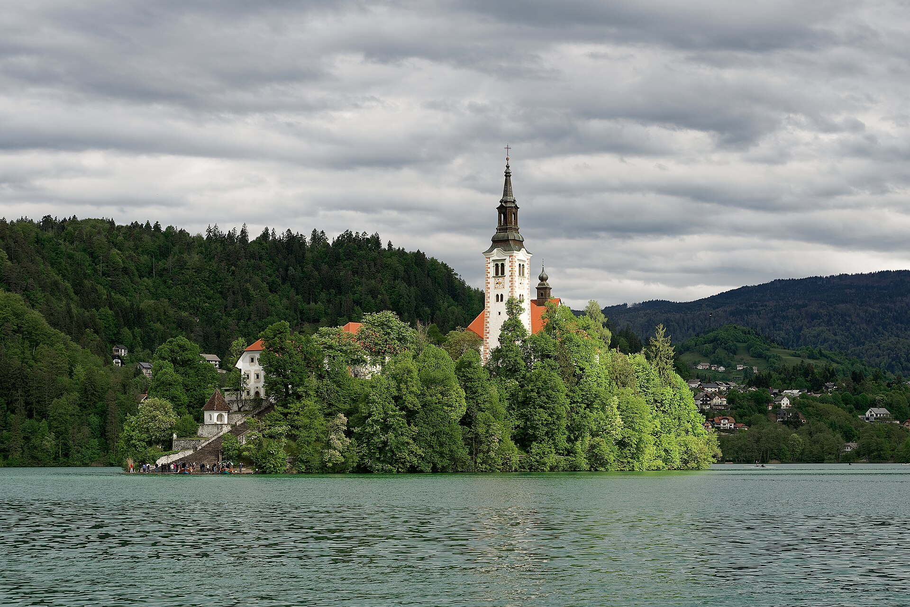
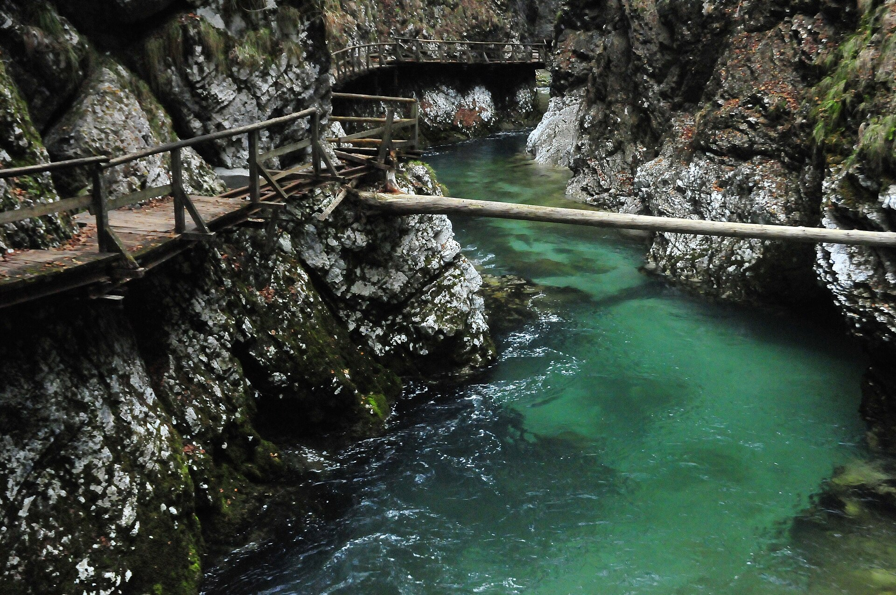
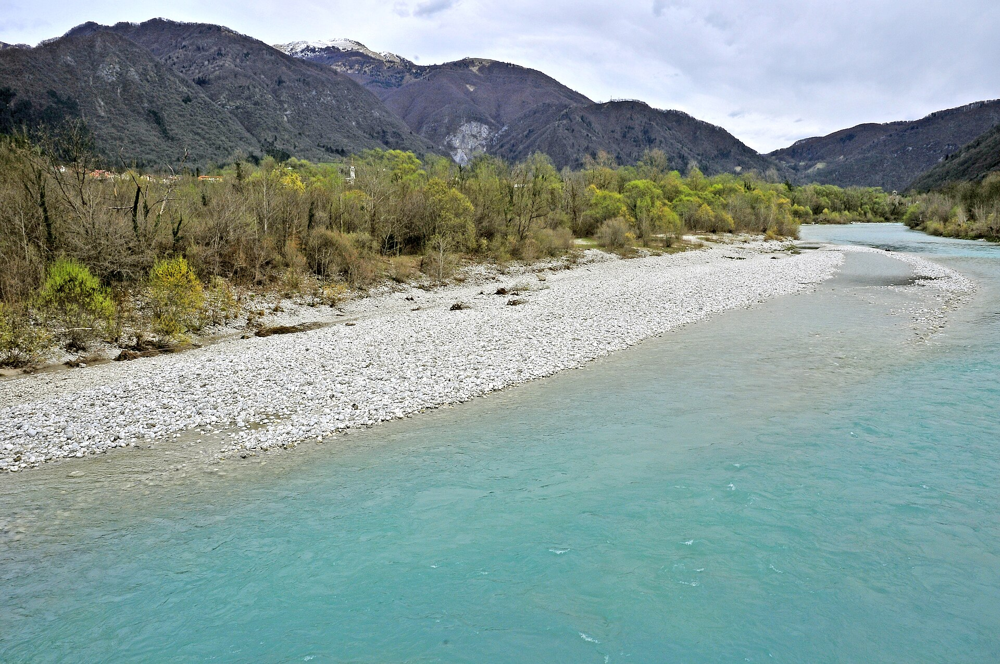
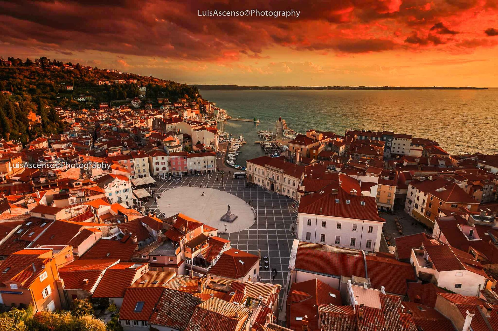
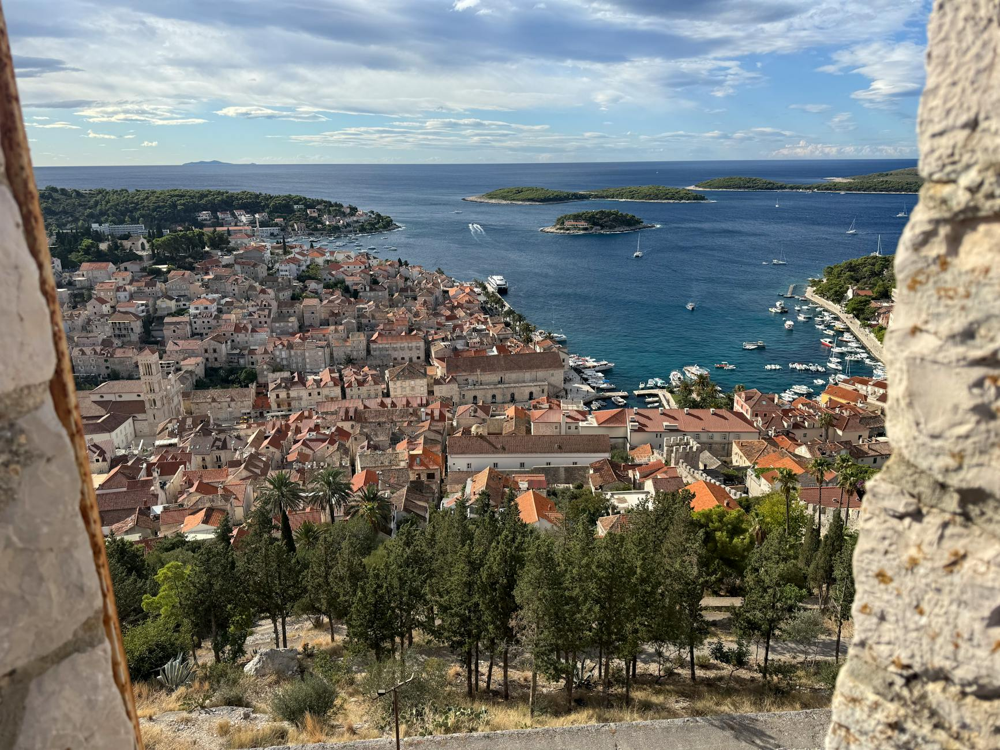
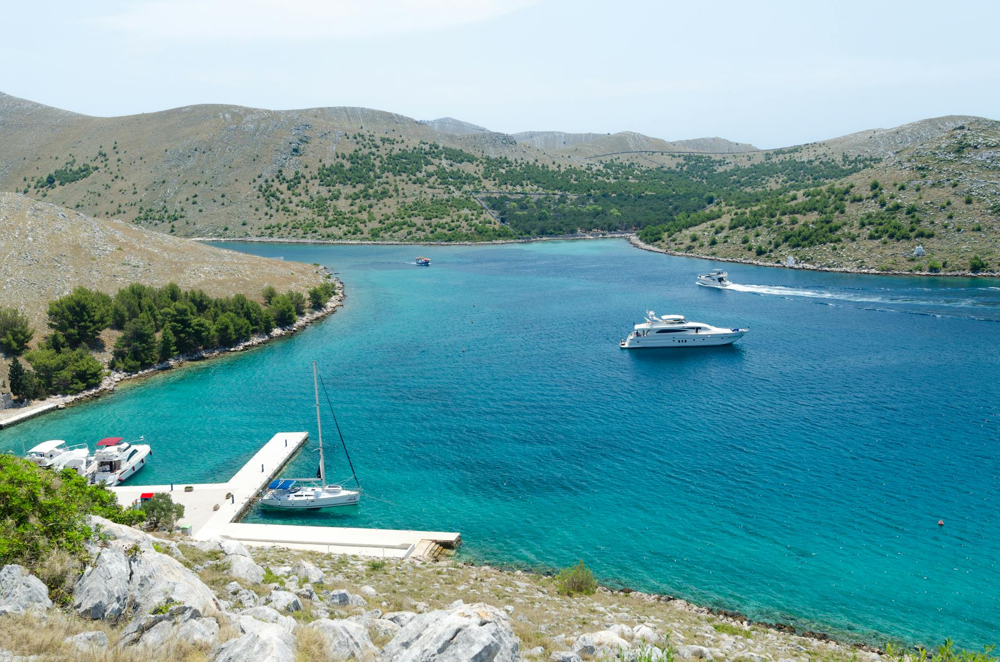
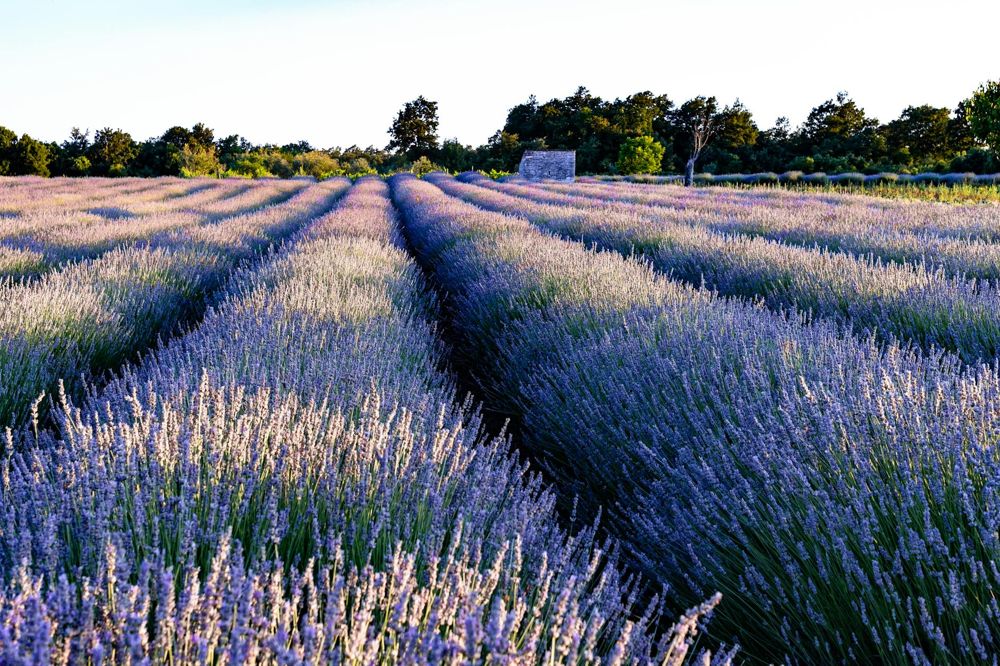
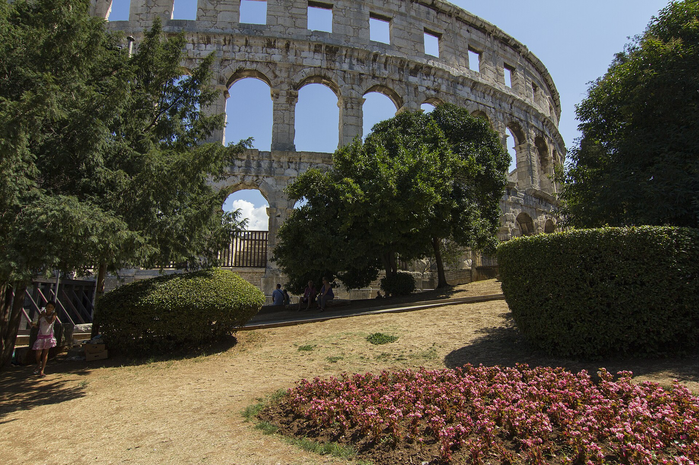
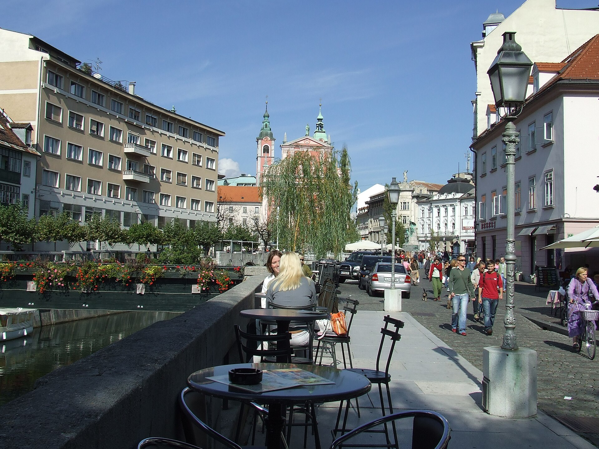